Projektgalerien
Unsere Arbeit.
In echten Bildern.
Einblicke in die Bauvorhaben aus der bisherigen WEHA-Galerie. Entdecken Sie die einzelnen Projekte und öffnen Sie die Bilder in voller Ansicht.
19 Projektgalerien
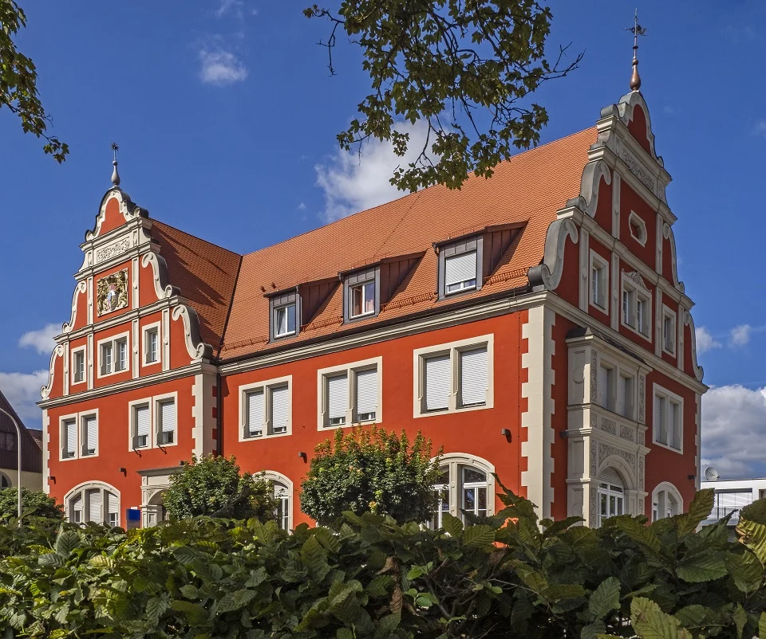
Amtsgericht Dinkelsbühl
Projekt ansehen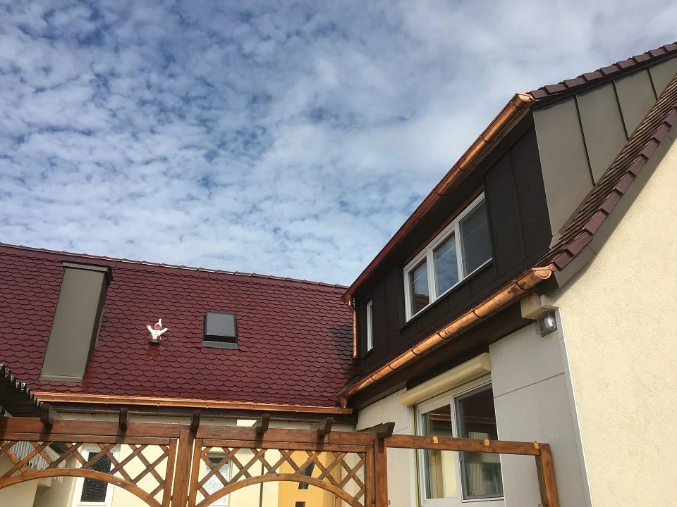
Bad Windsheim
Projekt ansehen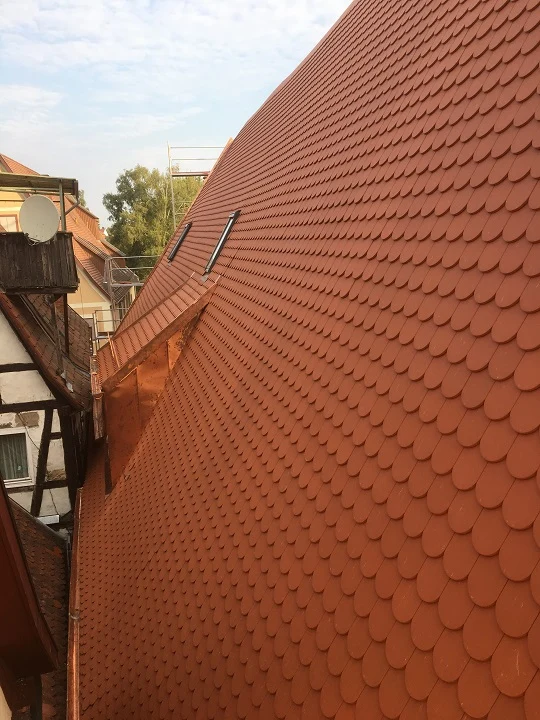
Wörnitzstraße
Projekt ansehen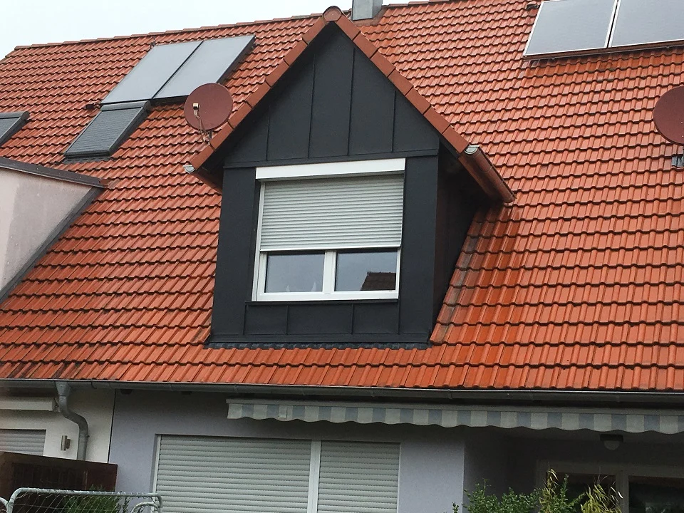
Erlangen
Projekt ansehen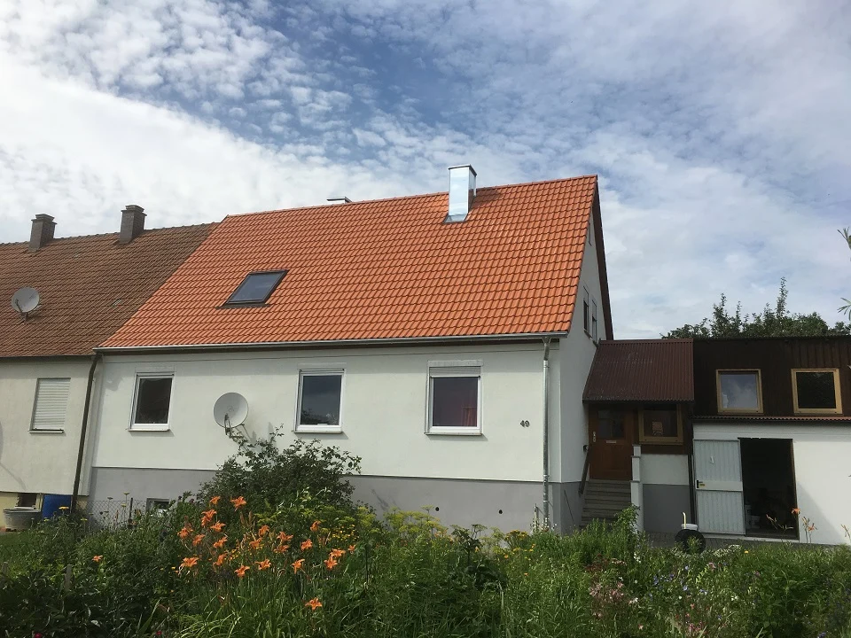
Illenschwang
Projekt ansehen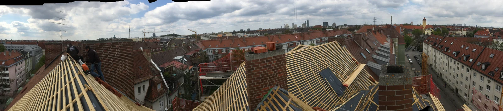
München · Destouchestraße
Projekt ansehen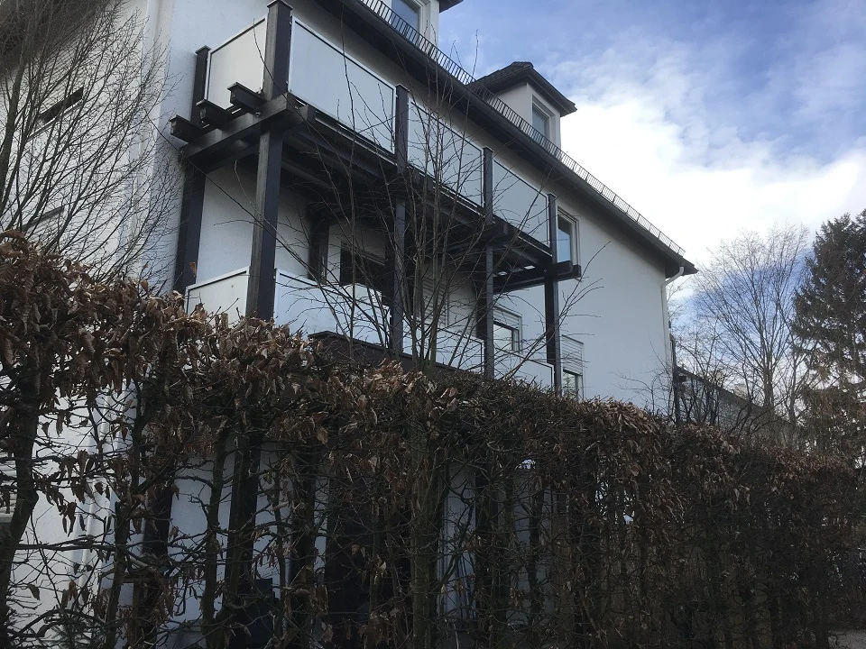
München · Fafnerstraße
Projekt ansehen
München · Glockenbach
Projekt ansehen
Nürnberg · Zirkelschmiedgasse
Projekt ansehen
Donauwörth
Projekt ansehen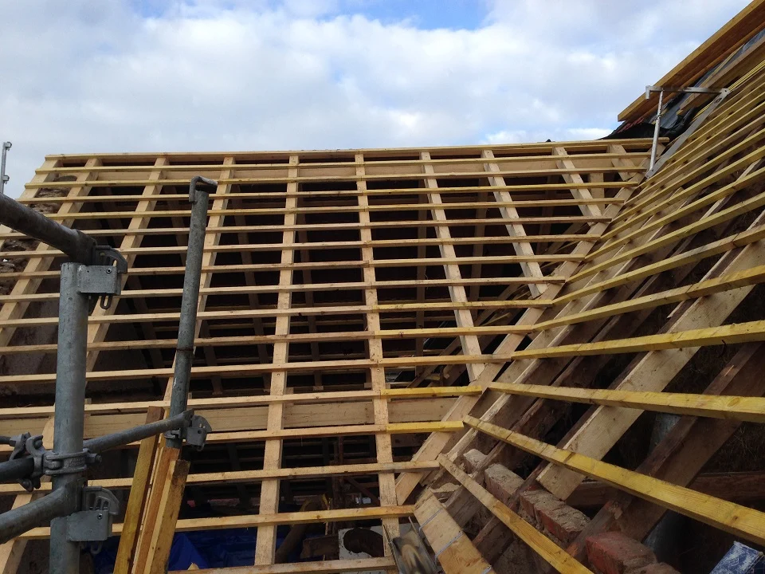
Dürrenstetten
Projekt ansehen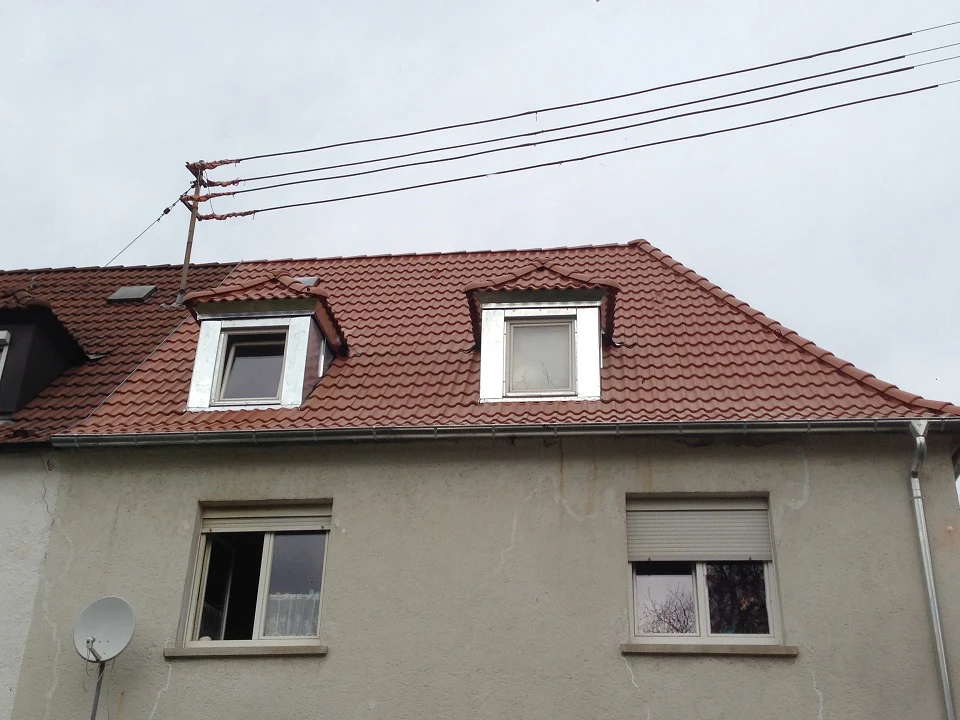
Geislingen an der Steige
Projekt ansehen
Dinkelsbühl
Projekt ansehen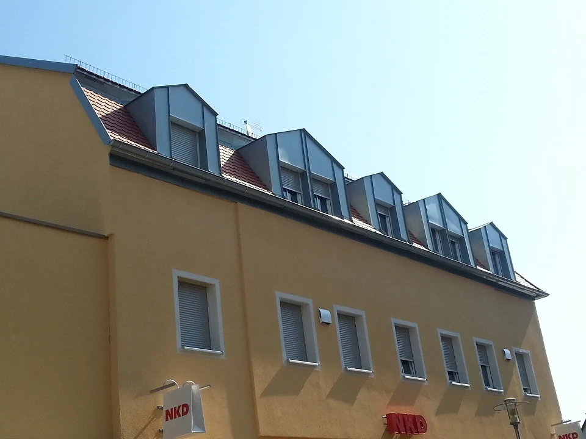
Zirndorf
Projekt ansehen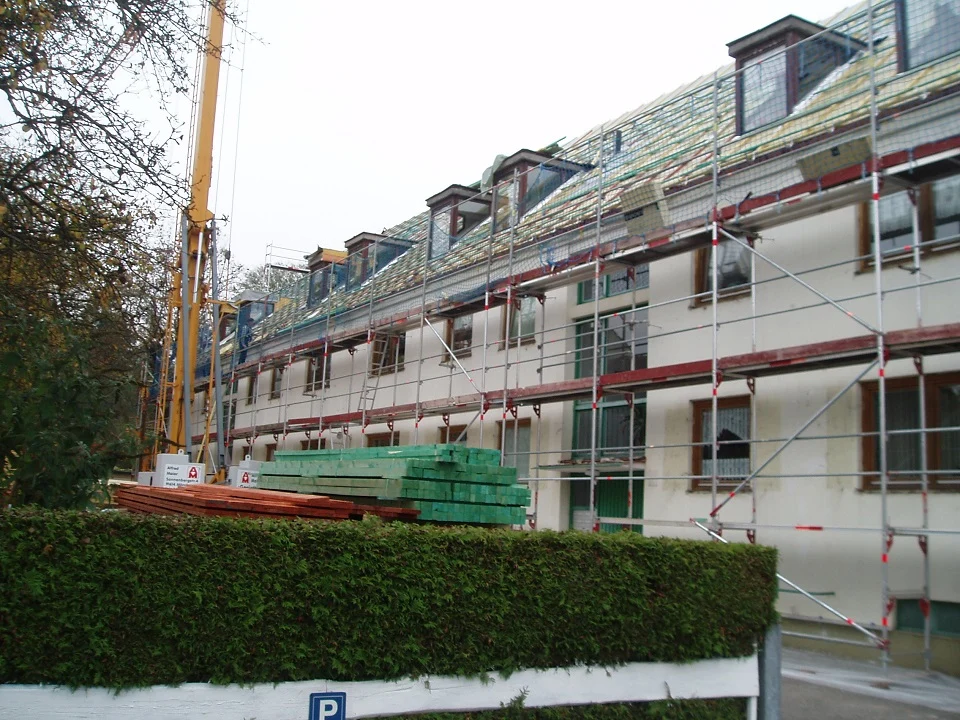
München · Solln
Projekt ansehen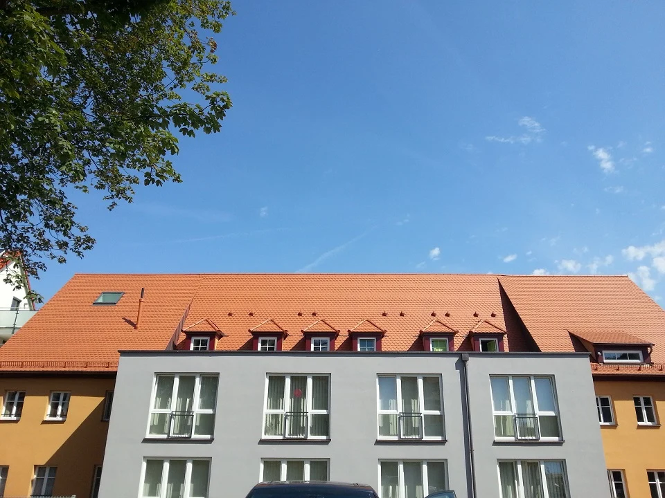
Ansbach
Projekt ansehen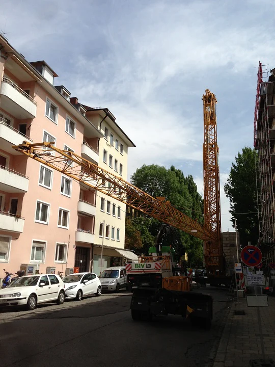
München · Schwabing
Projekt ansehen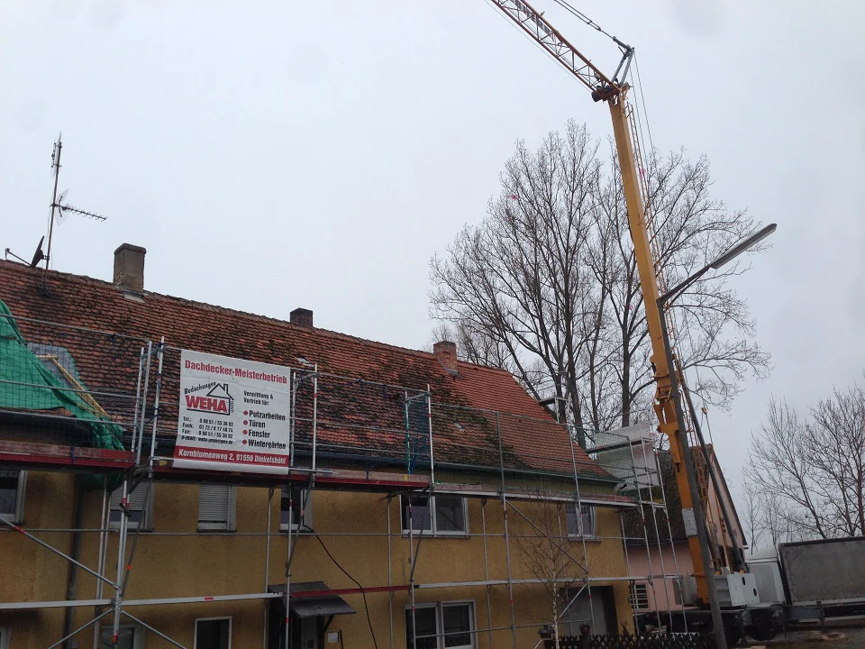
Unterhessbach · Ansbach
Projekt ansehen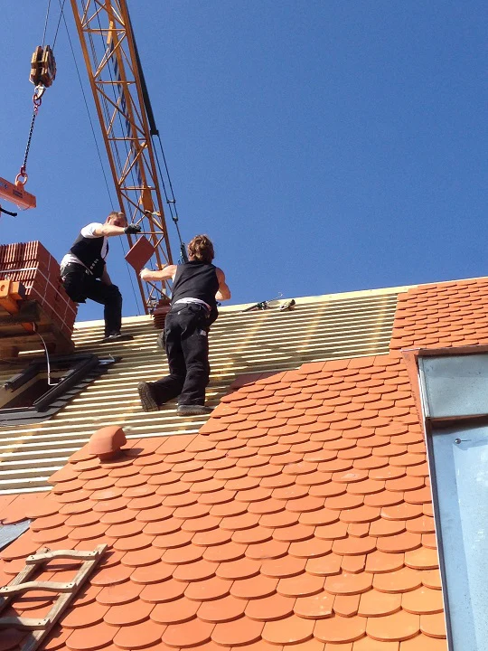
München · Straßlach
Projekt ansehenKeine Projekte gefunden. Versuchen Sie einen anderen Suchbegriff.
Aus dem ProjektarchivDachbau Magazin · Amtsgericht DinkelsbühlDer nächste Schritt.
Ein gutes Dach.
Beginnt mit einem Gespräch.
Neubau, Sanierung oder eine Frage zum Bestand – wir hören gerne von Ihnen.
Reden wir darüber 09851 / 5893666